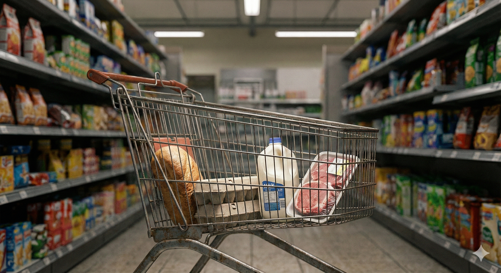

Informe Económico
Informe Económico
{kind=link}
Perspectiva macroeconómica en síntesis
Global: La incertidumbre pesa sobre el crecimiento La reciente escalada en el conflicto de Irán vuelve a aumentar la incertidumbre y es probable que afecte a la recuperación de la actividad empresarial.
USA: Consumo robusto pero cauteloso El mercado laboral es sorprendentemente fuerte y el consumo se mantiene sólido. Si la inflación sigue siendo de carácter persistente, los aumentos de los tipos de interés podrían debilitar el consumo y frenar el crecimiento.
Eurozona: Viento en contra por los precios de la energía y los tipos de interés El aumento de los precios del petróleo y del gas, así como unos tipos de interés oficiales más elevados, pesan sobre la demanda de crédito y la coyuntura.
China: La política apoya una economía nacional débil Las políticas monetaria y fiscal expansivas estabilizan la economía, pero la débil demanda interna y los riesgos geopolíticos frenan el crecimiento.
¿Recuperación en fuera de lugar?
ECONOMÍA REAL
Crecimiento
¿EE. UU. y eurozona: recuperación efímera?
{kind=link}
En mayo, la situación empresarial en los EE. UU. siguió siendo positiva, mientras que en la eurozona se deterioró aún más. El Índice de Gerentes de Compras (PMI) mide la situación empresarial actual y las expectativas a corto plazo de las empresas. Se sitúa por encima de 50 si más empresas informan de una mejora que de un deterioro. En la eurozona, el PMI cayó a 48,5, debido en particular a la fuerte caída del sector servicios. En los EE. UU., bajó ligeramente a 51,5, mientras que el nuevo bloqueo vuelve a empañar las perspectivas.
Sector servicios débil
{kind=link}
{kind=link}
El sector servicios de la eurozona se recuperó ligeramente en junio. El PMI de servicios subió a 49,4, pero se mantiene en territorio de contracción. El PMI manufacturero cayó ligeramente a 51,4. En EE. UU., el sector servicios subió con un PMI de 51,2, mientras que la industria continuó expandiéndose significativamente a 53,9. Un nuevo aumento de los precios del petróleo y la incertidumbre sobre la duración de la guerra en Irán probablemente empeorarán las perspectivas comerciales, especialmente en la eurozona, en los próximos meses.
Alemania y Francia con perspectivas sombrías
{kind=link}
{kind=link}
En Alemania y Francia, la situación empresarial se ha ensombrecido aún más. El PMI de servicios en mayo fue de 48,8 en Alemania y de 44,3 en Francia. Los PMIs manufactureros también descendieron. El hecho de que vuelvan a subir en el próximo mes seguirá dependiendo de la evolución de los precios de la energía.
China: Economía doméstica débil
{kind=link}
Los índices de gerentes de compras de mayo de 2026 dibujan un panorama mixto. El PMI oficial del NBS, que recoge principalmente a las empresas más grandes y orientadas al mercado nacional, se situó en 50,0 en la industria y en 50,3 en el sector servicios. Por el contrario, el PMI privado de RatingDog, más orientado a la exportación, se mantuvo más alto y volátil en 51,8 (industria) y 54,4 (servicios). La divergencia sigue reflejando la debilidad del mercado nacional frente a la economía exportadora.
La actividad de construcción no se recupera
{kind=link}
El número de viviendas nuevas iniciadas volvió a caer en marzo y se sitúa por debajo del nivel de 2010 desde 2022. Esto también se refleja en el número de inmuebles inacabados y terminados, que también descendieron con fuerza.
Consumo privado
EE. UU.: Las ventas minoristas siguen aumentando
{kind=link}
Las ventas minoristas aumentaron un 7,5% interanual en mayo. El índice semanal ‘Johnson Redbook Retail Sales’, que registra las ventas de grandes almacenes y tiendas minoristas, subió con fuerza y señala un fuerte crecimiento de las ventas minoristas en EE. UU. hasta mediados de julio.
EE. UU.: La deuda de tarjetas de crédito crece algo más despacio
{kind=link}
La deuda de tarjetas de crédito en EE. UU. cayó ligeramente en junio, pero sigue siendo alta. Desde mediados de 2021, la deuda de tarjetas de crédito ha estado aumentando tan rápido como de media desde 2012.
EE. UU.: Las búsquedas de Google apuntan a un consumo más cauteloso
{kind=link}
{kind=link}
A menudo el consumo comienza con una búsqueda en Internet. Por lo tanto, los datos de búsqueda online son un buen indicador adelantado del consumo privado. En las últimas semanas, la intensidad de búsqueda del término ‘restaurante’ se situó ligeramente por debajo de la media de los últimos cinco años, tras haber sido superior anteriormente. Los términos de la categoría ‘viajes’ se buscan desde hace dos semanas menos que la media de los últimos cinco años, a pesar del Mundial de fútbol.
EE. UU.: La tasa de ahorro en EE. UU. se mantiene baja
{kind=link}
La tasa de ahorro en EE. UU. cayó ligeramente en junio y se mantuvo significativamente por debajo de la media histórica del 5,2%. A diferencia de lo que ocurre en la eurozona, los hogares estadounidenses han agotado en gran medida el exceso de ahorro acumulado durante la pandemia. Al mismo tiempo, el crecimiento de los ingresos reales disponibles se ha ralentizado.
Solo el sentimiento republicano sigue siendo optimista
{kind=link}
{kind=link}
La confianza de los consumidores estadounidenses se mantiene pesimista en promedio. El Índice de Confianza del Consumidor del Conference Board se encuentra al nivel de la crisis del coronavirus. El Índice de Sentimiento del Consumidor de la Universidad de Michigan alcanzó valores que de otro modo solo se dan en recesiones. Como es habitual, los partidarios del partido de la oposición son más pesimistas. Los republicanos, por el contrario, se mantienen optimistas.
Gasto en energía: EE. UU. por debajo de la eurozona
{kind=link}
Históricamente, el gasto de los hogares en energía en los EE. UU. era superior al de Europa. Sin embargo, con la crisis del Covid y la guerra en Ucrania, esta relación se ha invertido. Hasta finales de 2024, la proporción del gasto en energía sobre el gasto total de los hogares en Alemania y Francia era superior a la de los EE. UU. El actual choque de los precios del petróleo probablemente reforzará aún más esta tendencia.
Eurozona y Alemania: La tasa de ahorro de los hogares se mantiene estable
{kind=link}
A diferencia de lo que ocurre en los EE. UU., la tasa de ahorro de los hogares en la eurozona se mantuvo estable y ligeramente por encima de la media histórica. La tasa de ahorro alemana también es más alta que en el resto de la eurozona.
Búsquedas de Google: Cautela en el consumo en Francia y Alemania
{kind=link}
{kind=link}
Las búsquedas de Google de ‘restaurante’ en Alemania y Francia apuntan a una demanda privada débil y en descenso. En ambos países, la intensidad de las búsquedas en las últimas semanas fue inferior a la media de los últimos cinco años para la misma temporada.
Menos cautela en España que en Italia
{kind=link}
{kind=link}
Mientras que en España la intensidad de búsqueda de ‘restaurante’ se mantuvo tan alta como la media de los últimos años, fue algo inferior en Italia.
China: El estado de ánimo apenas mejora
{kind=link}
En China, la confianza de los consumidores se recuperó ligeramente en mayo, pero sigue siendo históricamente baja. El estado de ánimo en el sector inmobiliario también está deprimido. El ‘Índice Nacional del Clima Inmobiliario’ lleva tres años a la baja.
Mercado laboral
Los salarios nominales aumentan más lentamente
{kind=link}
En junio, los salarios por hora promedio en los EE. UU. aumentaron un 3,6% interanual. En el primer trimestre de 2026, el crecimiento salarial fue del 3,9% en Alemania y de solo el 1,6% en Francia. Tanto en Alemania como en los EE. UU., el crecimiento salarial se mantiene por el promedio de 2011-2019.
EE. UU.: ¿Normalización del crecimiento de los salarios?
{kind=link}
El crecimiento de los salarios según el rastreador de salarios de Indeed Hiring Lab parece adelantarse al crecimiento del salario medio en EE. UU. en unos siete meses. En junio, los salarios anunciados en las ofertas de empleo en EE. UU. subieron un 2,4%, lo que indica una estabilización en este nivel.
EE. UU.: Convergencia del crecimiento salarial
{kind=link}
En junio, los salarios por hora en los EE. UU. aumentaron en promedio un 3,8%. Los incrementos salariales de los diferentes grupos salariales se están acercando: en el cuartil salarial más bajo los salarios aumentaron un 3,6%, mientras que en el cuartil más alto aumentaron un 3,9%. Esto significa que los salarios más altos ya no crecen tanto más rápido como en el pico de 2022.
El mercado laboral de EE. UU. está menos tensionado
{kind=link}
La curva de Beveridge representa la relación entre la tasa de vacantes (los puestos vacantes como proporción de la suma de puestos ocupados y vacantes) y la tasa de desempleo. Con la crisis del coronavirus, la curva se desplazó hacia fuera porque, debido a las medidas políticas, el desempleo se mantuvo alto a pesar de que había muchos puestos libres. Las rigideces se han vuelto a reducir y la curva de Beveridge ha vuelto al nivel anterior a la crisis del coronavirus. Por lo tanto, la situación en el mercado laboral estadounidense se ha normalizado.
El crecimiento del empleo se recupera, pero sigue siendo débil
{kind=link}
En junio, el número de puestos de trabajo en el sector privado no agrícola aumentó un 0,5% interanual según el informe ADP. Las cifras oficiales de la BLS mostraron un crecimiento anual del 0,6%. El mercado laboral de EE. UU. se mantiene estable, pero el crecimiento del empleo es más lento que en los años transcurridos entre la crisis financiera y la del COVID.
EE. UU.: Despidos y solicitudes de subsidio por desempleo dentro de lo normal
{kind=link}
{kind=link}
En mayo se anunciaron unos 97.000 recortes de empleo, algo más que el mes anterior. Al mismo tiempo, las solicitudes iniciales semanales de subsidio por desempleo subieron ligeramente hasta las 225.000 recientemente, pero se mantuvieron en el extremo inferior de las fluctuaciones de los últimos tres años y en un nivel históricamente bajo. Entre 1990 y 2019, el promedio semanal fue de unas 350.000.
Los salarios nominales aumentan más rápido en Alemania
{kind=link}
El rastreador de salarios de Indeed Hiring Lab muestra que los salarios nominales continúan aumentando en la eurozona. En mayo, la tasa de variación fue del 2,4% en la eurozona, del 2,9% en Alemania, del 1,2% en Francia y del 2,40% en los EE. UU. Solo en Alemania los salarios suben más lentamente que en meses anteriores, pero se mantienen en un nivel alto.
Eurozona: Mercado laboral tenso
{kind=link}
La curva de Beveridge, que muestra la relación entre la tasa de vacantes y la tasa de desempleo, apunta a un mercado laboral tenso en la eurozona. Durante la crisis del Covid, la curva se desplazó hacia fuera porque las medidas políticas hicieron que el desempleo se mantuviera alto a pesar de las muchas ofertas de trabajo. Entre tanto, estas rigideces se han reducido en gran medida y el desempleo se sitúa en un nivel históricamente bajo. Aunque la tasa de vacantes ha disminuido, vuelve a corresponder a la relación habitual entre ambas variables.
China: Desempleo juvenil muy alto
{kind=link}
La tasa de desempleo en China se movió lateralmente en el 5% en los últimos meses. El desempleo juvenil (excluyendo estudiantes) cayó ligeramente al 15,6% en mayo.
PRECIOS
Materias primas
Suben los costes de flete marítimo para el crudo y los contenedores
{kind=link}
Las tarifas de flete para los petroleros de crudo han subido a nuevos niveles récord como consecuencia del bloqueo del estrecho de Ormuz. A pesar de un descenso reciente, siguen estando por encima del nivel máximo de 2022 tras el inicio de la guerra en Ucrania. El World Container Index (WCI), que refleja las tarifas de flete en el comercio de mercancías, se mantuvo inicialmente en un nivel bajo debido al continuo exceso de capacidad en la construcción de portacontenedores, pero ha subido con fuerza en las últimas semanas.
Backwardation: Se esperan de nuevo precios del petróleo a la baja
{kind=link}
{kind=link}
Los mercados petroleros esperaban que los precios del petróleo se estabilizaran tras la anunciada reapertura del estrecho de Ormuz. La diferencia entre los precios de los futuros para la entrega de petróleo en tres meses y en un año ha vuelto a aumentar recientemente debido a la continua incertidumbre sobre el bloqueo. Esta ‘Backwardation’ señala que la actual escasez se considera temporal. Los precios de los futuros con entrega en un año han vuelto a subir con fuerza en los últimos días, más que tras el inicio de la guerra en Ucrania en 2022.
¿Cuándo se normalizará el tráfico marítimo por el estrecho de Ormuz?
{kind=link}
La reapertura del estrecho de Ormuz es crucial para el suministro de petróleo. Tras los nuevos ataques, los mercados de predicción descuentan una reapertura a finales de julio con solo un 3% de probabilidad aproximadamente. Para finales de diciembre, la probabilidad implícita es del 62%.
Los precios del gas en Europa siguen una trayectoria similar a la de 2022
{kind=link}
Europa sigue dependiendo en gran medida de las importaciones de petróleo y gas. Tras una rápida subida de alrededor del 75%, los futuros del gas natural holandés TTF con vencimiento a un mes han bajado ligeramente en los últimos días, pero se mantienen cerca de un 50% por encima del nivel de una semana antes del inicio de la guerra de Irán. In la crisis energética de 2022, los precios del gas en Europa se habían triplicado temporalmente.
EE. UU.
EE. UU.: La tasa de inflación sube con fuerza
{kind=link}
{kind=link}
En junio, los precios de consumo en EE. UU. subieron con menos fuerza que el mes anterior. El Índice de Precios de Consumo (IPC) aumentó un 3,5% interanual, menos de lo esperado. La inflación subyacente se situó en el 2,6%, por debajo de las expectativas medianas de los participantes en una encuesta mensual de Bloomberg. El continuo fuerte aumento del nivel de precios se debe en particular, aunque no únicamente, al choque del precio del petróleo.
Diferentes índices muestran una alta inflación
{kind=link}
La inflación se determina mediante diferentes índices. El IPC mide los precios de consumo, el índice PCE mide el gasto de los hogares y el deflactor del PIB mide los precios de todos los bienes económicos producidos en el país. Las tasas de variación de los tres índices alcanzaron su punto máximo a mediados de 2022. En mayo de 2026, la tasa de inflación del índice PCE subyacente preferido de la Fed (excluyendo energía y alimentos) fue del 3,3%.
Factores de la inflación: Servicios y energía
{kind=link}
La inflación de los servicios sigue siendo el motor dominante de la inflación en EE. UU. Mientras que la contribución de los precios de los alimentos se mantiene moderadamente positiva, el reciente choque del precio del petróleo continúa teniendo un fuerte impacto: la contribución de los precios de la energía a la inflación es la más alta desde 2022 y vuelve a impulsar notablemente la tasa general.
EE. UU.: Creciente presión inflacionista
{kind=link}
En junio, los precios de los servicios subieron un 3,2% interanual. Los precios de los alimentos continuaron subiendo con fuerza con una tasa de variación anual del 2,7%. Los precios de la energía aumentaron con especial fuerza, un 15,5%.
EE. UU.: La inflación Supercore vuelve a subir
{kind=link}
El Supercore se define como el índice de precios de servicios que excluye los costes de energía y vivienda. Basado en el índice IPC, la tasa anual de la inflación Supercore en junio fue del 3,2% aproximadamente. Medida por el índice PCE, la inflación Supercore subió a casi el 3,9% en mayo. Esto demuestra que la presión inflacionaria en el sector de servicios sigue siendo alta incluso sin costes de energía y vivienda.
El crecimiento de los alquileres ya no cae
{kind=link}
Los costes de vivienda representan una gran parte de los precios de los servicios en el IPC y también están fuertemente correlacionados con los costes de la vivienda habitual. Durante los años del Covid, el índice de alquileres de Zillow para nuevos contratos de arrendamiento fue un buen indicador adelantado de la evolución de los alquileres, ya que los alquileres existentes reaccionan con mayor lentitud. Actualmente, el índice de alquileres de Zillow con alrededor del 1,9% señala un crecimiento de alquileres más lento que el del índice de alquileres IPC que se recupera con cerca del 3,1%.
EE. UU.: La inflación podría seguir subiendo
{kind=link}
El índice de precios del PMI de servicios del ISM lidera la inflación de los precios de consumo en unos seis meses. En junio, el índice de precios del ISM cayó ligeramente, pero se mantiene en un nivel elevado.
Eurozona
Creciente inflación en la eurozona
{kind=link}
{kind=link}
En mayo, el IPCA de la eurozona subió un 3,2 % interanual, y la inflación subyacente (sin energía ni alimentos) se situó en el 2,5 %. En Alemania (2,7 %), Francia (2,8 %), Italia (3,3 %) y España (3,6 %), la inflación en mayo volvió a situarse claramente por encima del objetivo del 2 %.
Encarecimiento de los servicios y la energía
{kind=link}
Hasta finales de 2022, los precios de la energía y los alimentos fueron los que más contribuyeron a la inflación. Actualmente, el encarecimiento se debe principalmente a la subida de los precios de los servicios y, en menor medida, a los alimentos y de nuevo a la energía. Entretanto, los precios de la energía tuvieron un efecto moderador sobre la inflación durante varios meses.
Expectativas de inflación

Volátiles expectativas de inflación de los consumidores
{kind=link}
{kind=link}
En mayo de 2026, las expectativas de inflación de los consumidores estadounidenses para los próximos doce meses fueron del 4,8 % (Universidad de Michigan) y del 3,6 % (Fed de Nueva York). En la eurozona, los hogares esperaban en febrero una mediana del 4 % para el próximo año y del 2,9 % para los próximos tres años, según el BCE.
La energía vuelve a encarecerse …
{kind=link}
{kind=link}
Los volátiles precios de los alimentos y la energía se excluyen para aislar la evolución subyacente de la inflación. Sin embargo, son precisamente estos precios los que resultan cruciales para la percepción del poder adquisitivo y el comportamiento electoral. Tras la fuerte subida de 2021, los precios de la energía se han estabilizado, pero los de los alimentos siguen aumentando. La guerra en Irán ha vuelto a encarecer los costes energéticos: en EE. UU., se sitúan un 24% por encima del nivel anterior a las elecciones de Trump (nov. de 2024), mientras que en la eurozona, la diferencia es del 7%.
… lo que probablemente afectará al clima político
{kind=link}
En noviembre de 2026 se renovará la totalidad de la Cámara de Representantes y 35 de los 100 escaños del Senado. En los mercados de predicción, una mayoría republicana en la Cámara de Representantes tiene actualmente una probabilidad del 17%. Para el Senado, la probabilidad ha vuelto a subir recientemente y se sitúa en torno al 56%.
China: Temores de deflación
{kind=link}
La tasa de inflación china se ha situado por debajo del 1 % desde mediados de 2023. En abril fue del 1,2 %, y la inflación subyacente (sin alimentos ni energía) se situó también en el 1,2 %. Esto subraya la débil dinámica económica del país. Los altos precios del petróleo y la energía probablemente aumentarán la tasa de inflación, al menos temporalmente.
EXPECTATIVAS DE TIPOS DE INTERÉS
E IMPULSO FISCAL
EE. UU.: Tipo de interés real al alza
{kind=link}
El tipo de interés real es la diferencia entre el tipo nominal y la inflación (esperada). Mientras que el tipo de interés nominal puede leerse del mercado, para la inflación esperada se debe recurrir a una estimación. Dependiendo del enfoque elegido, el tipo de interés real (esperado) para la economía de los EE. UU. se sitúa actualmente en terreno positivo, entre el 0,3% y el 1,5%. Alternativamente, se puede leer en el mercado el rendimiento de los bonos del Estado indexados a la inflación (TIPS en los EE. UU.). Para un vencimiento de dos años, el tipo de interés real es positivo desde abril de 2022 y recientemente subió hasta el 2,1% aproximadamente.
Expectativas de tipos de interés volátiles
{kind=link}
{kind=link}
Los mercados de futuros están descontando al menos una subida de tipos de interés de 25 puntos básicos por parte de la Fed para diciembre de 2026, y como máximo otra subida de 25 puntos básicos para julio de 2027. En la eurozona, se descuentan nuevas subidas de tipos por un total de 50 puntos básicos para julio de 2027, esperándose ya 25 puntos básicos para finales de 2026. El nivel de tipos de interés esperado en Europa sigue estando, no obstante, significativamente por debajo del de los EE. UU.
China: Política monetaria expansiva

El banco central chino gestiona su política monetaria principalmente a través de tres instrumentos: el tipo repo inverso a 7 días, el tipo de interés preferencial de los préstamos (LPR) a un año de los bancos comerciales y el coeficiente de reservas obligatorias (RRR). En los últimos años, ha bajado los tres tipos en varias ocasiones para proporcionar más liquidez y apoyar así la coyuntura mediante la expansión del crédito. Para 2026, señala una política monetaria que seguirá siendo moderadamente laxa.
Impulsos fiscales moderados para 2026
{kind=link}
Las últimas estimaciones del FMI han modificado en particular el panorama para China en 2026. En lugar de un impulso fiscal neutral previsto anteriormente, ahora se proyecta un fuerte impulso positivo, impulsado por amplias medidas gubernamentales para apoyar la demanda interna. En los EE. UU., el impulso fiscal fue negativo en 2024 y 2025, pero se espera una ligera relajación para 2026. En la eurozona, el impulso fiscal positivo se desplaza de 2025 a 2026, ya que el programa alemán de armamento e infraestructuras solo surtirá efecto con retraso.
Previsión coyuntural para 2026
| Momento | Política Fiscal | Financiación | FvS-RI PIB | Consenso BBG | |
|---|---|---|---|---|---|
| EE. UU. | 0 | + | - | 2,0 % | 2,1 % |
| China | 0 | + | 0 | 4,6 % | 4,6 % |
| Eurozona | - | + | - | 0,6 % | 0,8 % |
| Alemania | - | + | - | 0,4 % | 0,6 % |
Nuestra previsión de crecimiento para 2026 se basa en una evaluación cualitativa de la dinámica económica, el efecto del crecimiento de la política fiscal y las condiciones de financiación, incluida la política monetaria. Estas previsiones deben entenderse como orientativas y no como predicciones puntuales precisas.
EE. UU.: Un consumo estable, una situación sólida del mercado laboral y un aumento más lento de los salarios justifican un dinamismo positivo sin cambios. En el plano fiscal, no se prevé ninguna consolidación presupuestaria. Al contrario, la orientación sigue siendo expansiva. En el plano monetario, se esperan de nuevo subidas de tipos de interés para finales de año. La guerra en Irán aumenta la incertidumbre y el riesgo de recesión.
China: La debilidad de carácter persistente del sector inmobiliario pesa sobre la demanda interna. La industria del tipo manufacturero estabiliza la economía a través de las exportaciones, aunque especialmente mediante subvenciones, lo que señala un exceso de capacidad y tiene un efecto deflacionista. Cabe esperar ligeros impulsos positivos por parte de la política fiscal y monetaria.
Eurozona / Alemania: La dinámica negativa en Alemania y en la eurozona, derivada del impacto del choque del precio del petróleo en la demanda y la industria, se ve compensada en parte a escala europea por el crecimiento más dinámico de España e Italia. En particular, España se mantiene resiliente. Es probable que los programas económicos financiados con deuda sirvan de impulso en 2026. Sin embargo, sin desregulación, es probable que las inversiones alemanas en infraestructuras y armamento tengan un efecto débil. El aumento de los precios del petróleo y del gas, así como una política monetaria más restrictiva, lastran además la economía.
Avisos legales
La información contenida y las opiniones expresadas en este documento reflejan las valoraciones del autor en el momento de la publicación y pueden cambiar en cualquier momento sin previo aviso. La información sobre declaraciones prospectivas refleja la visión y las expectativas de futuro del autor. Las opiniones y expectativas pueden diferir de las valoraciones presentadas en otros documentos de Flossbach von Storch SE. Las contribuciones se facilitan únicamente con fines informativos y sin compromiso contractual o de otro tipo. La información y las valoraciones contenidas no constituyen asesoramiento de inversión ni ningún otro tipo de recomendación. Se excluye cualquier responsabilidad por la integridad, actualidad y exactitud de la información y las valoraciones facilitadas. La evolución histórica no es un indicador fiable de la evolución futura.
Todos los derechos de autor y demás derechos, títulos y reclamaciones sobre, para y de toda la información de esta publicación están sujetos sin restricciones a las disposiciones aplicables en cada caso y a los derechos de propiedad de los respectivos propietarios registrados. Usted no adquiere ningún derecho sobre el contenido. El derecho de autor de los contenidos publicados y creados por la propia Flossbach von Storch SE pertenece exclusivamente a Flossbach von Storch SE. No se permite la reproducción o el uso de tales contenidos, en su totalidad o en parte, sin el consentimiento por escrito de Flossbach von Storch SE. Las reimpresiones de esta publicación, así como su puesta a disposición del público, requieren el consentimiento previo por escrito de Flossbach von Storch SE. © 2026 Flossbach von Storch. Todos los derechos reservados.